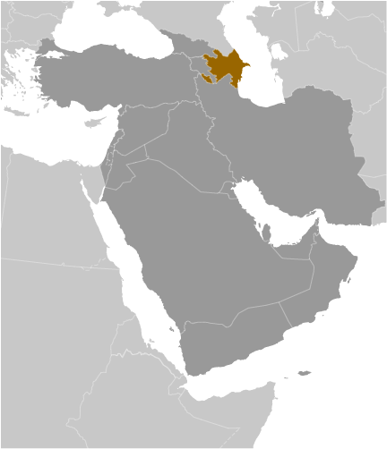
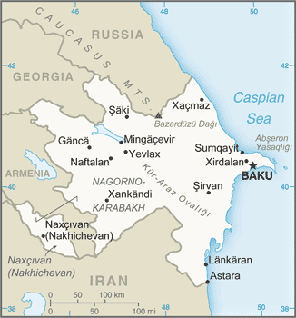
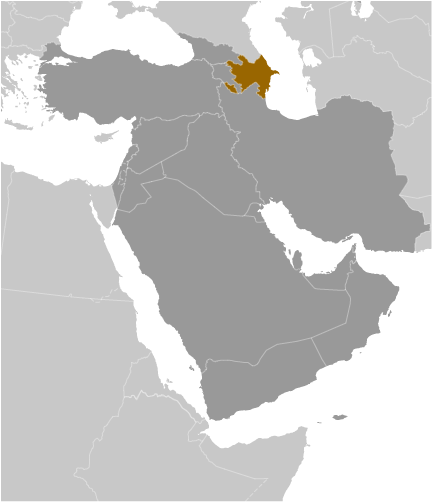
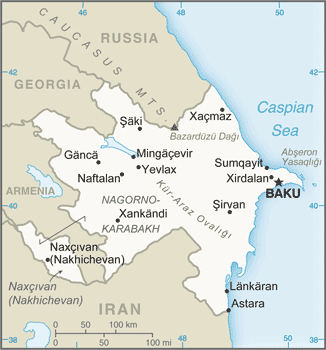

Middle East :: AZERBAIJAN
Introduction :: AZERBAIJAN
-
Azerbaijan - a nation with a majority-Turkic and majority-Shia Muslim population - was briefly independent (from 1918 to 1920) following the collapse of the Russian Empire; it was subsequently incorporated into the Soviet Union for seven decades. Azerbaijan has yet to resolve its conflict with Armenia over Nagorno-Karabakh, a primarily ethnic Armenian-populated region that Moscow recognized in 1923 as an autonomous republic within Soviet Azerbaijan after Armenia and Azerbaijan disputed the territory's status. Armenia and Azerbaijan reignited their dispute over the area in 1988; the struggle escalated militarily after both countries attained independence from the Soviet Union in 1991. By May 1994, when a cease-fire took hold, ethnic Armenian forces held not only Nagorno-Karabakh but also seven surrounding provinces in the territory of Azerbaijan. The OSCE Minsk Group, co-chaired by the US, France, and Russia, is the framework established to mediate a peaceful resolution of the conflict.Corruption in the country is widespread, and the government, which eliminated presidential term limits in a 2009 referendum and approved extending presidential terms from 5 to 7 years in 2016, has been accused of authoritarianism. Although the poverty rate has been reduced and infrastructure investment has increased substantially in recent years due to revenue from oil and gas production, reforms have not adequately addressed weaknesses in most government institutions, particularly in the education and health sectors, as well as the court system.
Geography :: AZERBAIJAN
-
Southwestern Asia, bordering the Caspian Sea, between Iran and Russia, with a small European portion north of the Caucasus range40 30 N, 47 30 EAsiatotal: 86,600 sq kmland: 82,629 sq kmwater: 3,971 sq kmnote: includes the exclave of Naxcivan Autonomous Republic and the Nagorno-Karabakh region; the region's autonomy was abolished by Azerbaijani Supreme Soviet on 26 November 1991country comparison to the world: 114about three-quarters the size of Pennsylvania; slightly smaller than Mainetotal: 2,468 kmborder countries (5): Armenia 996 km, Georgia 428 km, Iran 689 km, Russia 338 km, Turkey 17 km0 km (landlocked); note - Azerbaijan borders the Caspian Sea (713 km)none (landlocked)dry, semiarid steppelarge, flat Kur-Araz Ovaligi (Kura-Araks Lowland, much of it below sea level) with Great Caucasus Mountains to the north, Qarabag Yaylasi (Karabakh Upland) to the west; Baku lies on Abseron Yasaqligi (Apsheron Peninsula) that juts into Caspian Seamean elevation: 384 melevation extremes: lowest point: Caspian Sea -28 mhighest point: Bazarduzu Dagi 4,466 mpetroleum, natural gas, iron ore, nonferrous metals, bauxiteagricultural land: 57.6%arable land 22.8%; permanent crops 2.7%; permanent pasture 32.1%forest: 11.3%other: 31.1% (2011 est.)14,277 sq km (2012)highest population density is found in the far eastern area of the county, in and around Baku; apart from smaller urbanized areas, the rest of the country has a fairly light and evenly distributed populationdroughtslocal scientists consider the Abseron Yasaqligi (Apsheron Peninsula) (including Baku and Sumqayit) and the Caspian Sea to be the ecologically most devastated area in the world because of severe air, soil, and water pollution; soil pollution results from oil spills, from the use of DDT pesticide, and from toxic defoliants used in the production of cottonparty to: Air Pollution, Biodiversity, Climate Change, Climate Change-Kyoto Protocol, Desertification, Endangered Species, Hazardous Wastes, Marine Dumping, Ozone Layer Protection, Ship Pollution, Wetlandssigned, but not ratified: none of the selected agreementsboth the main area of the country and the Naxcivan exclave are landlocked
People and Society :: AZERBAIJAN
-
9,961,396 (July 2017 est.)country comparison to the world: 90noun: Azerbaijani(s)adjective: AzerbaijaniAzerbaijani 91.6%, Lezghin 2%, Russian 1.3%, Armenian 1.3%, Talysh 1.3%, other 2.4%note: the separatist Nagorno-Karabakh region is populated almost entirely by ethnic Armenians (2009 est.)Azerbaijani (Azeri) (official) 92.5%, Russian 1.4%, Armenian 1.4%, other 4.7% (2009 est.)Muslim 96.9% (predominantly Shia), Christian 3%, other <0.1, unaffiliated <0.1 (2010 est.)note: religious affiliation is still nominal in Azerbaijan; percentages for actual practicing adherents are much lower0-14 years: 22.95% (male 1,220,356/female 1,065,514)15-24 years: 14.84% (male 775,422/female 703,027)25-54 years: 45.39% (male 2,219,613/female 2,302,356)55-64 years: 10.17% (male 467,830/female 545,505)65 years and over: 6.64% (male 253,679/female 408,094) (2017 est.)total dependency ratio: 40.2youth dependency ratio: 32.1elderly dependency ratio: 8potential support ratio: 12.4 (2015 est.)total: 31.3 yearsmale: 29.8 yearsfemale: 33 years (2017 est.)country comparison to the world: 1070.87% (2017 est.)country comparison to the world: 12515.8 births/1,000 population (2017 est.)country comparison to the world: 1167.1 deaths/1,000 population (2017 est.)country comparison to the world: 1280 migrant(s)/1,000 population (2017 est.)country comparison to the world: 71highest population density is found in the far eastern area of the county, in and around Baku; apart from smaller urbanized areas, the rest of the country has a fairly light and evenly distributed populationurban population: 55.2% of total population (2017)rate of urbanization: 1.38% annual rate of change (2015-20 est.)BAKU (capital) 2.374 million (2015)at birth: 1.11 male(s)/female0-14 years: 1.15 male(s)/female15-24 years: 1.09 male(s)/female25-54 years: 0.96 male(s)/female55-64 years: 0.86 male(s)/female65 years and over: 0.62 male(s)/femaletotal population: 0.98 male(s)/female (2016 est.)23.2 years (2014 est.)25 deaths/100,000 live births (2015 est.)country comparison to the world: 120total: 23.8 deaths/1,000 live birthsmale: 24.7 deaths/1,000 live birthsfemale: 22.9 deaths/1,000 live births (2017 est.)country comparison to the world: 70total population: 72.8 yearsmale: 69.7 yearsfemale: 76.1 years (2017 est.)country comparison to the world: 1441.89 children born/woman (2017 est.)country comparison to the world: 1376% of GDP (2014)country comparison to the world: 1043.4 physicians/1,000 population (2014)4.7 beds/1,000 population (2012)improved:urban: 94.7% of populationrural: 77.8% of populationtotal: 87% of populationunimproved:urban: 5.3% of populationrural: 22.2% of populationtotal: 13% of population (2015 est.)improved:urban: 91.6% of populationrural: 86.6% of populationtotal: 89.3% of populationunimproved:urban: 8.4% of populationrural: 13.4% of populationtotal: 10.7% of population (2015 est.)0.1% (2016 est.)country comparison to the world: 1019,200 (2016 est.)country comparison to the world: 96<500 (2016 est.)19.9% (2016)country comparison to the world: 1064.9% (2013)country comparison to the world: 752.6% of GDP (2014)country comparison to the world: 158definition: age 15 and over can read and writetotal population: 99.8%male: 99.9%female: 99.7% (2016 est.)total: 13 yearsmale: 13 yearsfemale: 13 years (2014)total: 13.4%male: 11.4%female: 15.8% (2015 est.)country comparison to the world: 83
Government :: AZERBAIJAN
-
conventional long form: Republic of Azerbaijanconventional short form: Azerbaijanlocal long form: Azarbaycan Respublikasilocal short form: Azarbaycanformer: Azerbaijan Soviet Socialist Republicetymology: the name translates as "Land of Fire" and refers to naturally occurring surface fires on ancient oil pools or from natural gas dischargespresidential republicname: Baku (Baki, Baky)geographic coordinates: 40 23 N, 49 52 Etime difference: UTC+4 (9 hours ahead of Washington, DC, during Standard Time)66 rayons (rayonlar; rayon - singular), 11 cities (saharlar; sahar - singular);rayons: Abseron, Agcabadi, Agdam, Agdas, Agstafa, Agsu, Astara, Babak, Balakan, Barda, Beylaqan, Bilasuvar, Cabrayil, Calilabad, Culfa, Daskasan, Fuzuli, Gadabay, Goranboy, Goycay, Goygol, Haciqabul, Imisli, Ismayilli, Kalbacar, Kangarli, Kurdamir, Lacin, Lankaran, Lerik, Masalli, Neftcala, Oguz, Ordubad, Qabala, Qax, Qazax, Qobustan, Quba, Qubadli, Qusar, Saatli, Sabirabad, Sabran, Sadarak, Sahbuz, Saki, Salyan, Samaxi, Samkir, Samux, Sarur, Siyazan, Susa, Tartar, Tovuz, Ucar, Xacmaz, Xizi, Xocali, Xocavand, Yardimli, Yevlax, Zangilan, Zaqatala, Zardabcities: Baku, Ganca, Lankaran, Mingacevir, Naftalan, Naxcivan (Nakhichevan), Saki, Sirvan, Sumqayit, Xankandi, Yevlax30 August 1991 (declared from the Soviet Union); 18 October 1991 (adopted by the Supreme Council of Azerbaijan)Republic Day (founding of the Democratic Republic of Azerbaijan), 28 May (1918)history: several previous; latest adopted 12 November 1995amendments: proposed by the president of the republic or by at least 63 members of the National Assembly; passage requires at least 95 votes of Assembly members in two separate readings of the draft amendment six months apart and requires presidential approval after each of the two Assembly votes, followed by presidential signature; constitutional articles on the authority, sovereignty, and unity of the people cannot be amended; amended 2002, 2009, 2016 (2017)civil law systemhas not submitted an ICJ jurisdiction declaration; non-party state to the ICCtcitizenship by birth: yescitizenship by descent: yesdual citizenship recognized: noresidency requirement for naturalization: 5 years18 years of age; universalchief of state: President Ilham ALIYEV (since 31 October 2003); First Vice President Mehriban ALIYEVA (since 21 February 2017)head of government: Prime Minister Artur RASIZADE (since 4 November 2003); First Deputy Prime Minister Yaqub EYYUBOV (since June 2006); note - RASIZADE was previously prime minister from 20 July 1996 to 4 August 2003cabinet: Council of Ministers appointed by the president and confirmed by the National Assemblyelections/appointments: president directly elected by absolute majority popular vote in 2 rounds if needed for a 5-year term (eligible for unlimited terms); election last held on 9 October 2013 (next to be held in October 2018); prime minister and first deputy prime minister appointed by the president and confirmed by the National Assembly; note - a constitutional amendment approved in a September 2016 referendum will expand presidential terms from 5 to 7 years when it formally takes effect; a separate constitutional amendment approved in the September 2016 referendum also introduced the post of first vice-president and additional vice-presidents, who are directly appointed by theelection results: Ilham ALIYEV reelected president in first round; percent of vote - Ilham ALIYEV (YAP) 84.5%, Jamil HASANLI (National Council of Democratic Forces) 5.5%, other 10%note: OSCE observers concluded that the election did not meet international standardsdescription: unicameral National Assembly or Milli Mejlis (125 seats; members directly elected in single-seat constituencies by simple majority vote to serve 5-year terms)elections: last held on 1 November 2015 (next to be held in November 2020)election results: percent of vote by party - NA; seats by party - YAP 69, CSP 2, Democratic Reforms 1, Social Democratic Party 1, Social Prosperity 1, Unity Party 1, Democratic Enlightenment 1, Whole Azerbaijan Popular Front 1, Motherland 1, Civil Unity 1, Great Undertaking Party 1, National Renaissance Party 1, independent 43, invalid 1highest court(s): Supreme Court (consists of the chairman, vice chairman, and 23 judges in plenum sessions and organized into civil, economic affairs, criminal, and rights violations chambers); Constitutional Court (consists of 9 judges)judge selection and term of office: Supreme Court judges nominated by the president and appointed by the Milli Majlis; judges appointed for 10 years; Constitutional Court chairman and deputy chairman appointed by the president; other court judges nominated by the president and appointed by the Milli Majlis to serve single 15-year termssubordinate courts: Courts of Appeal (replaced the Economic Court in 2002); district and municipal courts;Civil Solidarity Party or CSP [Sabir RUSTAMKHANLI]Civil Unity Party or CUP [Sabir HAJIYEV]Democratic Enlightenment [Elshan MUSAYEV]Democratic Reforms Party [Asim MOLLAZADE]Great Undertaking [Fazil MUSTAFA]Musavat [Arif HAJILI]Popular Front Party [Ali KARIMLI]Motherland Party or AVP [Fazail AGAMALI]Social Democratic Party [Ayaz MUTALIBOV]Social Prosperity Party [Khanhusein KAZIMLI]Unity Party [Tahir KARIMLI]Whole Azerbaijan Popular Front Party [Gudrat HASANGULIYEV]Yeni (New) Azerbaijan Party or YAP [President Ilham ALIYEV]D18 [Ruslan IZZETLI]]Ireli Public Union or Ireli PU [MirHasan SEYIDOV]National Council of Democratic Forces [Jamil HASANLI]N!DA Civic Movement [Turgut GAMBAR, Ulvi HASANLI] (youth movement)Republican Alternative or REAL [Ilgar MAMMADOV (in prison since 2013)]ADB, BSEC, CD, CE, CICA, CIS, EAPC, EBRD, ECO, EITI (compliant country), FAO, GCTU, GUAM, IAEA, IBRD, ICAO, ICC (NGOs), ICRM, IDA, IDB, IFAD, IFC, IFRCS, ILO, IMF, IMO, Interpol, IOC, IOM, IPU, ISO, ITSO, ITU, ITUC (NGOs), MIGA, NAM, OAS (observer), OIC, OPCW, OSCE, PFP, SELEC (observer), UN, UNCTAD, UNESCO, UNHCR, UNIDO, UNWTO, UPU, WCO, WFTU (NGOs), WHO, WIPO, WMO, WTO (observer)chief of mission: Ambassador Elin SULEYMANOV (since 5 December 2011)chancery: 2741 34th Street NW, Washington, DC 20008telephone: [1] (202) 337-3500FAX: [1] (202) 337-5911consulate(s) general: Los Angeleschief of mission: Ambassador Robert CEKUTA (since 19 February 2015)embassy: 111 Azadlig Prospekti, Baku AZ1007mailing address: American Embassy Baku, US Department of State, 7050 Baku Place, Washington, DC 20521-7050telephone: [994] (12) 488-3300FAX: [994] (12) 488-3330three equal horizontal bands of sky blue (top), red, and green; a crescent and eight-pointed star in white are centered in the red band; the blue band recalls Azerbaijan's Turkic heritage, red stands for modernization and progress, and green refers to Islam; the crescent moon and star are a Turkic insignia; the eight star points represent the eight Turkic peoples of the worldflames of fire; national colors: blue, red, greenname: "Azerbaijan Marsi" (March of Azerbaijan)lyrics/music: Ahmed JAVAD/Uzeyir HAJIBEYOVnote: adopted 1992; although originally written in 1919 during a brief period of independence, "Azerbaijan Marsi" did not become the official anthem until after the dissolution of the Soviet Union
Economy :: AZERBAIJAN
-
Prior to the decline in global oil prices since 2014, Azerbaijan's high economic growth was attributable to rising energy exports, and some non-export sectors also featured double-digit growth. Oil exports through the Baku-Tbilisi-Ceyhan Pipeline, the Baku-Novorossiysk, and the Baku-Supsa Pipelines remain the main economic driver, but efforts to boost Azerbaijan's gas production are underway. The expected completion of the geopolitically important Southern Gas Corridor between Azerbaijan and Europe will open up another source of revenue from gas exports. Declining oil prices caused a 3.8% contraction in GDP in 2016, reinforced by a sharp reduction in the construction sector. The economic decline has been accompanied by higher inflation and a weakened banking sector in the aftermath of the two sharp currency devaluations in 2015.Azerbaijan has made limited progress with market-based economic reforms. Pervasive public and private sector corruption and structural economic inefficiencies remain a drag on long-term growth, particularly in non-energy sectors, but the government has made efforts to combat corruption, particularly in customs and with the “ASAN” one-stop window concept for government services. Several other obstacles impede Azerbaijan's economic progress, including the need for more foreign investment in the non-energy sector and the continuing conflict with Armenia over the Nagorno-Karabakh region. While trade with Russia and the other former Soviet republics remains important, Azerbaijan has expanded trade with Turkey and Europe and is seeking new markets for non-oil/gas exports, mainly from the agricultural sector, for example with Gulf Cooperation Council member countries, the US, and others.Long-term prospects depend on world oil prices, Azerbaijan's ability to implement export routes for its growing gas production, and its ability to improve the business environment and diversify the economy. In late 2016, the President approved a strategic roadmap that identified key non-energy segments of the economy for development, such as agriculture, logistics, and tourism.$165.7 billion (2016 est.)$168.8 billion (2015 est.)$165.9 billion (2014 est.)note: data are in 2016 dollarscountry comparison to the world: 73$37.56 billion (2016 est.)-3.1% (2016 est.)0.6% (2015 est.)2.7% (2014 est.)country comparison to the world: 211$17,500 (2016 est.)$18,200 (2015 est.)$18,200 (2014 est.)note: data are in 2016 dollarscountry comparison to the world: 9618% of GDP (2016 est.)22.2% of GDP (2015 est.)37.1% of GDP (2014 est.)country comparison to the world: 32household consumption: 57.8%government consumption: 13.1%investment in fixed capital: 24.8%investment in inventories: 1.4%exports of goods and services: 46.5%imports of goods and services: -43.7% (2016 est.)agriculture: 6%industry: 51.7%services: 42.3% (2016 est.)fruit, vegetables, grain, rice, grapes, tea, cotton, tobacco; cattle, pigs, sheep, goatspetroleum and petroleum products, natural gas, oilfield equipment; steel, iron ore; cement; chemicals and petrochemicals; textiles-4.2% (2016 est.)country comparison to the world: 1865.032 million (2016 est.)country comparison to the world: 82agriculture: 37%industry: 14.3%services: 48.9% (2014)6% (2016 est.)5.8% (2015 est.)country comparison to the world: 764.9% (2015 est.)lowest 10%: 3.4%highest 10%: 27.4% (2008)33.7 (2008)36.5 (2001)country comparison to the world: 104revenues: $10.97 billionexpenditures: $11.12 billion (2016 est.)29.2% of GDP (2016 est.)country comparison to the world: 84-0.4% of GDP (2016 est.)country comparison to the world: 5339.2% of GDP (2016 est.)28.3% of GDP (2015 est.)country comparison to the world: 136calendar year12.4% (2016 est.)4.1% (2015 est.)country comparison to the world: 21015% (10 March 2017)15% (14 September 2016)note: this is the Refinancing Rate, the key policy rate for the National Bank of Azerbaijancountry comparison to the world: 1012.56% (31 December 2016 est.)13.86% (31 December 2015 est.)country comparison to the world: 64$5.06 billion (31 December 2016 est.)$4.423 billion (31 December 2015 est.)country comparison to the world: 99$6.521 billion (31 December 2016 est.)$5.523 billion (31 December 2015 est.)country comparison to the world: 118$13.65 billion (31 December 2016 est.)$14.82 billion (31 December 2015 est.)country comparison to the world: 100$NA$-1.363 billion (2016 est.)$-222.5 million (2015 est.)country comparison to the world: 138$13.21 billion (2016 est.)$15.59 billion (2015 est.)country comparison to the world: 76oil and gas roughly 90%, machinery, foodstuffs, cottonItaly 19.9%, Germany 10.5%, France 8%, Indonesia 5.8%, Czech Republic 5.2% (2016)$9.004 billion (2016 est.)$9.774 billion (2015 est.)country comparison to the world: 98machinery and equipment, foodstuffs, metals, chemicalsRussia 15.7%, Turkey 12.5%, US 9.6%, Germany 7.5%, Italy 6.7%, Japan 6.2%, China 5.4%, UK 5.4% (2016)$7.142 billion (31 December 2016 est.)$7.91 billion (31 December 2015 est.)country comparison to the world: 83$13.83 billion (31 December 2016 est.)$13.22 billion (31 December 2015 est.)country comparison to the world: 104$73.83 billion (31 December 2016 est.)$66.5 billion (31 December 2015 est.)country comparison to the world: 51$17.05 billion (31 December 2016 est.)$14.48 billion (31 December 2015 est.)country comparison to the world: 55Azerbaijani manats (AZN) per US dollar -1.5957 (2016 est.)1.5957 (2015 est.)1.0246 (2014 est.)0.7844 (2013 est.)0.79 (2012 est.)
Energy :: AZERBAIJAN
-
electrification - total population: 100% (2016)23.3 billion kWh (2015 est.)country comparison to the world: 7320.27 billion kWh (2015 est.)country comparison to the world: 71265 million kWh (2015 est.)country comparison to the world: 72108 million kWh (2015 est.)country comparison to the world: 977.417 million kW (2015 est.)country comparison to the world: 7284.5% of total installed capacity (2015 est.)country comparison to the world: 770% of total installed capacity (2015 est.)country comparison to the world: 3814.6% of total installed capacity (2015 est.)country comparison to the world: 1021% of total installed capacity (2015 est.)country comparison to the world: 138833,500 bbl/day (2016 est.)country comparison to the world: 23721,600 bbl/day (2014 est.)country comparison to the world: 180 bbl/day (2014 est.)country comparison to the world: 917 billion bbl (1 January 2017 es)country comparison to the world: 20142,100 bbl/day (2014 est.)country comparison to the world: 60101,000 bbl/day (2015 est.)country comparison to the world: 8146,770 bbl/day (2014 est.)country comparison to the world: 566,171 bbl/day (2014 est.)country comparison to the world: 15829.37 billion cu m (2016 est.)country comparison to the world: 2718.2 billion cu m (2015 est.)country comparison to the world: 457.32 billion cu m (2015 est.)country comparison to the world: 27200 million cu m (2015 est.)country comparison to the world: 71991.1 billion cu m (1 January 2017 es)country comparison to the world: 2735 million Mt (2013 est.)country comparison to the world: 73
Communications :: AZERBAIJAN
-
total subscriptions: 1,700,233subscriptions per 100 inhabitants: 17 (July 2016 est.)country comparison to the world: 63total: 10,315,993subscriptions per 100 inhabitants: 104 (July 2016 est.)country comparison to the world: 83general assessment: requires considerable expansion and modernization; fixed-line telephone and a broad range of other telecom services are controlled by a state-owned telecommunications monopoly and growth has been stagnant; more competition exists in the mobile-cellular market with three providers in 2017domestic: teledensity of some 17 fixed lines per 100 persons; mobile-cellular teledensity has increased to 104 telephones per 100 persons; satellite service connects Baku to a modern switch in its exclave of Naxcivan (Nakhchivan)international: country code - 994; the Trans-Asia-Europe (TAE) fiber-optic link transits Azerbaijan providing international connectivity to neighboring countries; the old Soviet system of cable and microwave is still serviceable; satellite earth stations - 2 (2017)3 state-run and 1 public TV channels; 4 domestic commercial TV stations and about 15 regional TV stations; cable TV services are available in Baku; 1 state-run and 1 public radio network operating; a small number of private commercial radio stations broadcasting; local FM relays of Baku commercial stations are available in many localities; local relays of several international broadcasters had been available until late 2008 when their broadcasts were banned from FM frequencies (2010).aztotal: 7,720,502percent of population: 78.2% (July 2016 est.)country comparison to the world: 60
Transportation :: AZERBAIJAN
-
number of registered air carriers: 2inventory of registered aircraft operated by air carriers: 35annual passenger traffic on registered air carriers: 1,803,112annual freight traffic on registered air carriers: 41,954,600 mt-km (2015)4K (2016)37 (2013)country comparison to the world: 108total: 30over 3,047 m: 52,438 to 3,047 m: 51,524 to 2,437 m: 13914 to 1,523 m: 4under 914 m: 3 (2017)total: 7under 914 m: 7 (2013)1 (2012)condensate 89 km; gas 3,890 km; oil 2,446 km (2013)total: 2,944.3 kmbroad gauge: 2,944.3 km 1.520-m gauge (approx. 1,767 km electrified) (2017)country comparison to the world: 71total: 52,942 kmpaved: 26,789 kmunpaved: 26,153 km (2006)country comparison to the world: 76total: 104by type: tankers 34, universal dry-cargo 20, ferries 13, roll on/roll off 2, auxillary ships 35foreign-owned: 1 (Turkey 1)registered in other countries: 2 (Malta 1, Saint Vincent and the Grenadines 1) (2017)country comparison to the world: 53major seaport(s): Baku (Baki) located on the Caspian Sea
Military and Security :: AZERBAIJAN
-
3.64% of GDP (2016)5.61% of GDP (2015)4.56% of GDP (2014)4.54% of GDP (2013)4.66% of GDP (2012)country comparison to the world: 6Army, Navy, Air, and Air Defense Forces (2010)18-35 years of age for compulsory military service; service obligation 18 months or 12 months for university graduates; 17 years of age for voluntary service; 17 year olds are considered to be on active service at cadet military schools (2012)
Transnational Issues :: AZERBAIJAN
-
Azerbaijan, Kazakhstan, and Russia ratified the Caspian seabed delimitation treaties based on equidistance, while Iran continues to insist on a one-fifth slice of the sea; the dispute over the break-away Nagorno-Karabakh region and the Armenian military occupation of surrounding lands in Azerbaijan remains the primary focus of regional instability; residents have evacuated the former Soviet-era small ethnic enclaves in Armenia and Azerbaijan; local border forces struggle to control the illegal transit of goods and people across the porous, undemarcated Armenian, Azerbaijani, and Georgian borders; bilateral talks continue with Turkmenistan on dividing the seabed and contested oilfields in the middle of the CaspianIDPs: 582,000 (conflict with Armenia over Nagorno-Karabakh; IDPs are mainly ethnic Azerbaijanis but also include ethnic Kurds, Russians, and Turks predominantly from occupied territories around Nagorno-Karabakh; includes IDPs' descendants, returned IDPs, and people living in insecure areas and excludes people displaced by natural disasters; around half the IDPs live in the capital Baku) (2016)stateless persons: 3,585 (2016)limited illicit cultivation of cannabis and opium poppy, mostly for CIS consumption; small government eradication program; transit point for Southwest Asian opiates bound for Russia and to a lesser extent the rest of Europe